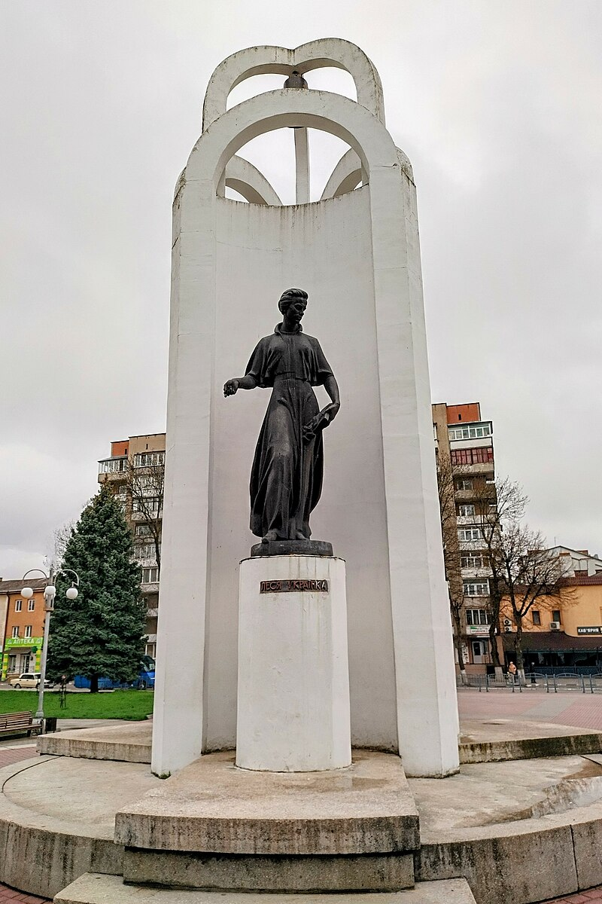
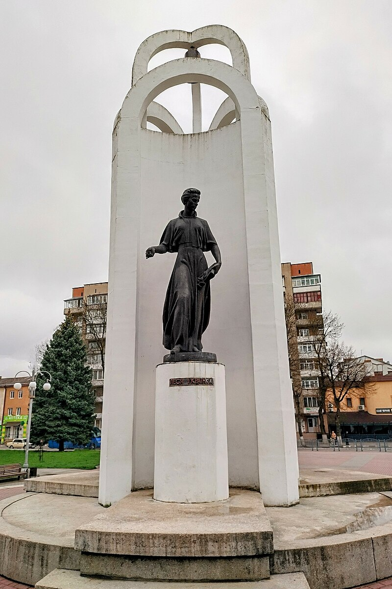

Українські Герої: Вічна Спадщина
Україна славиться своєю багатошаровою історією та багатим культурним надбанням. Відчуття гордості викликають визначні постаті, які не лише пройшли через випробування часу, але й залишили невід'ємний вклад у розвиток нації. У цій статті ми розглянемо кількох видатних українців, чия спадщина продовжує надихати та мотивувати.
Визначні українські постаті:
Тарас Шевченко
Видатний український поет, художник і громадський діяч.
Його творчість стала невід'ємною частиною національної ідентичності та культурного надбання
України.
Ключові моменти його життя та діяльності:
- Біографічні дані: Тарас Шевченко народився 9 березня 1814 року в селі Моринці.
Його дитинство та юність були сповнені тяжких праці та обмежень, але це не завадило йому розвивати свій талант і виправдати очікування від нього. - Літературна спадщина: Шевченко відомий своїми поетичними збірками, такими як " Кобзар", "Заповіт" та "Гайдамаки" , які стали символом боротьби за свободу та гідність українського народу. Його творчість відзначається глибокою емоційною силою, проникливістю та актуальністю.
- Художня діяльність: Окрім поезії, Тарас Шевченко був видатним художником, чий
талант виявився у
створенні картин, акварелей та малюнків.
Його роботи відзначаються реалістичним стилем та глибоким суспільним змістом. - Громадська діяльність: Шевченко був активним учасником громадського життя свого
часу.
Він виступав за права селян та кріпаків, боровся за національну самостійність України та активно відстоював ідеали гуманізму та справедливості. - Наслідок і вплив: Життя та творчість Тараса Шевченка стали невичерпним джерелом
натхнення для
наступних поколінь українців.
Його ідеали свободи, правди та гідності залишаються актуальними й надихають на боротьбу за краще майбутнє.
Тарас Шевченко - символ національної гідності та незламності, чия творчість здатна змінювати світ та надихати на великі справи.

Леся Українка
Видатна українська поетеса, драматург, перекладачка та громадська діячка.
ЇЇ життя та творчість вражають своїм величчю та значущістю.
Ключові моменти її життя та діяльності:
- Біографічні дані: Леся Українка (справжнє ім'я - Лариса Петрівна Косач-Квітка)
народилася 25
лютого 1871 року в селі Новоград-Волинський.
Вона народилася в родині відомого українського письменника Петра Косача-Квітки. - Літературна спадщина: Українка є автором численних поезій, драм, оповідань та
літературних
статей,
які відзначаються глибоким філософським змістом та емоційною силою.
Її творчість пройнята любов'ю до рідної землі, вірою в справедливість та боротьбою за свободу. - Громадська діяльність: Поза літературною діяльністю, Леся Українка активно брала
участь у
громадському житті.
Вона підтримувала феміністичні та гуманістичні ідеали, боролася за права жінок та виступала проти соціальних нерівностей. - Культурний внесок: Леся Українка також відома своєю перекладацькою діяльністю, вона перекладала твори класиків світової літератури, що сприяло популяризації української культури серед інших народів.
- Наслідок і вплив: Сьогодні Леся Українка залишається не лише однією з найвидатніших фігур української літератури, але і символом боротьби за ідеали правди, краси та свободи. Її твори продовжують надихати та вражати серця читачів у всьому світі.
Леся Українка - це не тільки письменниця, але і героїня, чия сила та відданість ідеалам назавжди залишиться в серцях людей.

Іван Франко
Видатний український письменник, громадський діяч, філософ і політичний діяч.
Він зробив неймовірний внесок у розвиток української культури та суспільства.
Ключові моменти його життя та діяльності:
- Біографічні дані: Іван Якович Франко народився 27 серпня 1856 року в селі
Нагуєвичі, що на
Львівщині. Він виріс у сім'ї селянина та був першим з шестеро дітей.
За своє життя він пройшов складний шлях від селянської сім'ї до визнаного у світі літератора та громадського діяча. - Літературна спадщина: Франко є автором безлічі творів у різних жанрах - від поезії
та прози
до
драми та наукових праць.
Його твори відзначаються глибиною думки, гостротою соціального усвідомлення та талантом до використання мовних засобів. - Громадська діяльність: Франко був активним учасником громадського життя свого
часу.
Підтримував ідеї національної самосвідомості, боровся за права українського народу та активно сприяв розвитку освіти й культури. - Філософські погляди: Іван Франко був визначною постаттю української філософії.
Він висловлював власні уявлення про суспільство, права людини, етику та мораль, залишаючи свої думки у творчих та наукових працях. - Наслідок і вплив: Сьогодні Іван Франко залишається не лише символом української культури та національної свідомості, але й джерелом натхнення для мільйонів українців. Його ідеї та творчість продовжують впливати на сучасне суспільство та спонукають до думки й дії.
Іван Франко - письменник, мислитель, гуманіст і борець за справедливість, чий внесок у розвиток української культури та духовності залишається невичерпним джерелом натхнення.
Контекст життя та діяльності: історія, соціум і культура
Тарас Шевченко:
- Історичний контекст: Жив у період російської імперії, коли Україна перебувала під владою імперії і зазнавала культурного, економічного та політичного тиску.
- Соціальний контекст: Шевченко народився в селянській родині і сам довгий час
працював
на землі як
кріпак.
Він був свідком соціальної нерівності, експлуатації селян та обмежень українського народу. - Культурний контекст: Він був частиною культурного відродження України, де національна свідомість зміцнювалася через розвиток літератури, мистецтва та освіти.
Леся Українка:
- Історичний контекст: Жила в кінці 19 - початку 20 століття, коли Україна переживала складний період під владою російської імперії, а потім під Австро-Угорською монархією.
- Соціальний контекст: Українка була активною учасницею жіночих правозахисних рухів
та
соціальних
реформ.
Вона боролася за права жінок та висвітлювала проблеми соціальної справедливості. - Культурний контекст: Українка відчувала необхідність в розвитку української мови, літератури та культури, щоб зміцнити національну ідентичність та відчуття гідності.
Іван Франко:
- Історичний контекст: Жив у період розквіту українського національного відродження пізнього 19 - початку 20 століття, коли українське суспільство боролося за свою самобутність та незалежність.
- Соціальний контекст: Франко був активним учасником робітничих та національно-визвольних рухів, боровся за права трудящих та пропагував ідеї соціальної справедливості.
- Культурний контекст: Він був важливою постаттю української літератури та культури, його твори відігравали значну роль у формуванні національної свідомості та утвердженні української мови.
Спадщина: актуальність і вплив на сучасне українське суспільство
- Боротьба за права та гідність: У творчості Шевченка, Українки та Франка
прослідковується стійка
боротьба за права людини та гідність нації.
Їхні поезії, драми та есеї підтримують ідеали справедливості, рівності та свободи, які залишаються актуальними й сьогодні. - Національна ідентичність: Творчість цих великих постатей сприяла формуванню
української
національної
свідомості та ідентичності.
Їхні твори не лише відображали культурний дух та спадщину України, а й закликали до збереження української мови, традицій та цінностей. - Соціальна активність та громадянська позиція: Українські поети і письменники не лише
створювали
твори
мистецтва, а й були активними учасниками громадського життя.
Їхні ідеї та громадянська позиція впливають на сучасну політичну, економічну та соціальну агенду в Україні. - Загальна людяність та гуманізм: Теми гуманізму, співчуття та милосердя, що присутні у
творчості
цих
постатей, залишаються важливими й сьогодні.
Вони нагадують про необхідність розуміння, толерантності та підтримки один одного в складних ситуаціях. - Інтелектуальний розвиток та освіта: Франко, Українка та Шевченко були пропагандистами
освіти та
культури.
Сьогодні їхня роль у підвищенні рівня освіти та культурного розвитку важлива, оскільки вони надихають молоде покоління до здобуття знань та самовдосконалення.
Загалом, внесок Тараса Шевченка, Лесі Українки та Івана Франка українському суспільству надзвичайно великий і актуальний навіть у сучасних реаліях. Їхні ідеали, цінності та принципи залишаються важливими орієнтирами для формування кращого майбутнього України.
Місця вшанування: музеї, пам'ятники, бібліотеки
Музеї
Музей Тараса Шевченка в Каневі: Розташований на території Каневського заповідника, цей музей присвячений життю і творчості Тараса Шевченка. Він містить різноманітні експозиції, артефакти та матеріали, пов'язані з великим українським поетом.
Музей Лесі Українки в Києві: Розташований у будинку, де жила і працювала Леся Українка, цей музей зберігає цінні експонати та документи, пов'язані з життям і творчістю поетеси.
Музей Івана Франка у Львові: Розташований на території Каневського заповідника, цей музей присвячений життю і творчості Тараса Шевченка. Він містить різноманітні експозиції, артефакти та матеріали, пов'язані з великим українським поетом.
Пам'ятник «Будителям»
Пам'ятник «Будителям» — єдиний в Україні пам'ятник-триптих Тарасу
Шевченку,
Лесі Українці
та Івану Франку відкритий у Стрию 24 серпня 1995 року.
Пам'ятник складається з бронзових скульптур трьох
поетів на повен зріст, у нішах кожної з арок, під загальною високою ажурною тригранною аркою з
білого
мармуру над цими трьома арками і декоративним вічовим дзвоном під нею, що символізує заклик до
об'єднання нації.
 


Бібіліотеки
Багато бібліотек України зберігають рукописи, документи, листування та інші матеріали,
пов'язані з життям та діяльністю цих постатей.
Найвідоміші з них:
- Національна бібліотека України імені В.І. Вернадського
- Львівська національна наукова бібліотека імені В. Стефаника
Світове визнання та внесок Шевченка, Українки та Франка у світову культуру
Тарас Шевченко, Леся Українка та Іван Франко - були визнані не лише в
Україні, а й за її межами завдяки своїй видатній творчості та впливовій громадянській діяльності. Вони
зробили значний внесок у світову культуру, який визнали та відзначили національні та
міжнародні спільноти.
Ось деякі аспекти їхнього визнання та внеску:
- Поезія і література: Творчість Тараса Шевченка, Лесі Українки та Івана Франка визнана
світовою
спільнотою як видатний приклад української літератури.
Їхні поетичні твори перекладені на багато мов світу і вивчаються як зразки високої літературної майстерності та глибокого соціального та філософського змісту. - Публіцистика та ідеологія: Ідеї Шевченка, Українки та Франка про національну самостійність, права людини та соціальну справедливість були визнані в Україні та за її межами. Вони відіграли важливу роль у формуванні політичної свідомості та національної ідентичності не лише українців, а й інших народів, які борються за свої права та свободу.
- Мистецтво і культура: Тарас Шевченко також був видатним художником, чиї роботи отримали визнання в світі. Його картини та малюнки відзначаються майстерністю та глибоким емоційним змістом. Крім того, Леся Українка та Іван Франко внесли великий внесок у розвиток української драматургії, музики та інших галузей мистецтва.
- Міжнародне визнання: Роботи цих постатей були відзначені численними преміями та
нагородами, які
вони отримали як в Україні, так і за її межами.
Їхні імена є вічно живими символами боротьби за свободу, гідність та правду, які впливають на світову свідомість та культуру.
В цілому, великі українські постаті Тарас Шевченко, Леся Українка та Іван Франко внесли незабутній внесок у світову культуру, визнання якого перейшло далеко за межі України. Їхні ідеї, творчість та громадська діяльність залишаються важливими джерелами натхнення для людей у всьому світі.